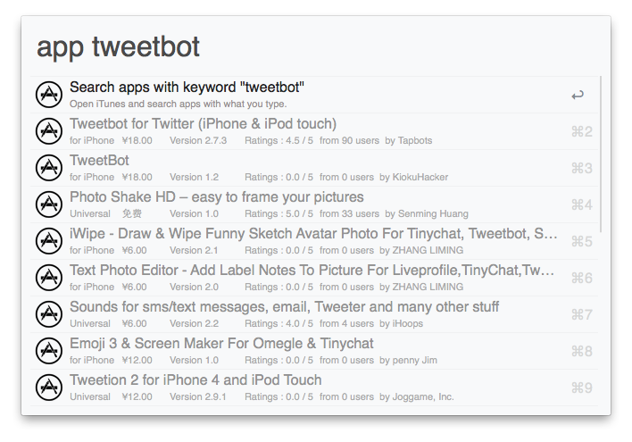
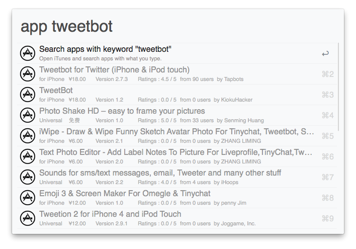

How to use
You can use it like this:
app angry birds
or
mas angry birds
This Alfred Workflow is used for searching apps at iTunes or Mac App Store.

You can use it like this:
app angry birds
or
mas angry birds